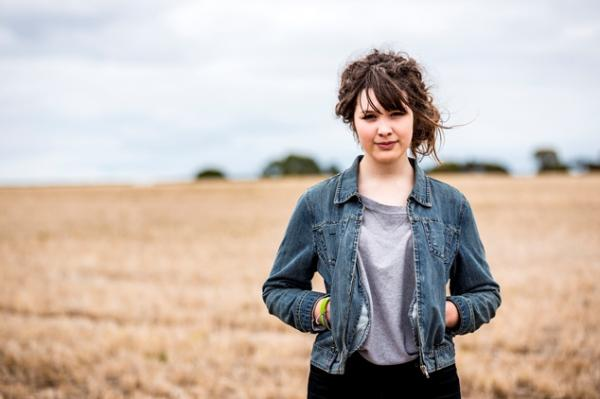

Supporting your child after a natural disaster

Information for parents/family members/friends of a child, adolescent or young person who has experienced a natural disaster.
Natural disasters are inevitable but uncommon. Everyone needs some support after being in, or witnessing a natural disaster, but everyone is different so the type or level of support they need is different and changes over time. If you are reading this fact sheet you are likely to be aware that it is important to seek support following natural disasters. It's great you want to support your child/young person. headspace encourages you to make sure you are also supporting yourself.
Common reactions and behaviours
Grief and loss
People who have survived a natural disaster often feel a sense of grief and loss, but there are no 'right' or 'wrong' feelings and they can vary markedly from one person to another. You may be supporting a child who has lost family members, friends, neighbours, pets, their homes and cherished possessions. Young people sometimes have trouble explaining their feelings, and they may seem 'cut off' or bewildered. They might feel they cannot grieve openly, particularly if others seem to have lost even more.
Confusion, guilt and shame
Trying to understand a natural disaster can be confusing, especially for young people. This can make them feel angrier and more frightened as the days go by. Sometimes survivors of a disaster feel guilty that they have survived while others have not. Younger children sometimes feel a sense of personal responsibility, as if they caused the disaster in some way. Young people may feel ashamed of how they are feeling, and withdraw from other people or hide their feelings.
Fear, anxiety and insecurity
Sometimes people feel anxious, frightened and unsafe for weeks or months after the disaster, despite being physically safe. This is a normal reaction to a frightening event, but it can add to a person's distress.
Reactions to trauma
Young people can 'act out' when they are grieving or traumatised. They can become aggressive or irritable, and start having problems at school. Alternatively, they might become withdrawn and 'clingy', and find it hard to separate themselves from family members.
Children might develop physical complaints like stomach aches and headaches in response to their distress. Some adolescents may self-harm, use drugs or alcohol, or develop eating disorders as a response to their emotions.
Reactions of parents/families
Most people, of all ages, recover well from the emotional effects of natural disasters. Families, especially parents, have an important role in the healing process. But parents and families have their own problems to cope with, and you may find yourself juggling your own reactions to the disaster with your responsibilities for your child. Reactions can include:
- Guilt about not being able to shield your child from the effects of the disaster.
- Fear and anxiety about the continuing safety of your child.
- Negativity about the world in general, which you may not be able to conceal from your child.
- Impatience and frustration about your child making a slow recovery.
How to help your child
Provide stability
Maintain some regular activities and encourage your child to eat, rest and sleep well. Explain what will happen today and the next day, as best you can, and write down a plan to remind them. Provide as much security as possible, by being around, giving your child time to talk, and by developing some comforting routines. Involve your child in choosing new belongings, and perhaps remember old toys and other treasured possessions with a 'goodbye ceremony'.
Offer reassurance
Tell your child about what is being done to help the whole community. When possible, reassure them that their friends and other family members are safe, and contact them if you can.
Normalise, but don't minimise
It can be a relief for young people to know that their feelings are normal, but be careful to acknowledge and respect their emotions. Do not dismiss or minimise the intensity and importance of their reactions.
Explain gently, create a shared story
When your child is calm and feeling safe you can talk about how natural disasters are random and unpredictable. Correct any confused explanations of the disaster your child may have.
Give your child the chance to talk about what they miss and what they have lost, but do not push them to talk. Acknowledge that what has happened is not 'fair'. If you have lost loved ones, tell them enough details so there are no 'secrets', without causing extra distress.
Young children might need only a small amount of information, but they do need reassurance that natural disasters are uncommon and they are now safe. Try not to discuss worrying 'adult' issues about the disaster in front of young children.
Use your child's strengths and likes
Talk about the strengths you know your child has, and how they can use them. For example, they might like to draw or tell stories, so let them do this to explain what has happened and how they are feeling. It's quite okay to talk about how the disaster has affected you, and how you are trying to get life back on track.
Be available
Make time to be with your child, to do normal things, and to have some quiet time with them. Try to be available emotionally, although this can sometimes be hard when you, too, have a lot to cope with. If you seem anxious, it can reinforce their view that the world is unsafe. At the same time, allow your child some space, and some time to themselves.
Encourage coping skills
Encourage your child to step back from their problems or negative feelings and think of ways to reduce their distress. Help them work out ways to solve problems, and find ways to relax and reduce their anxiety.
Be a role model
Look after yourself and be true to how you feel. Try to keep your life as structured as possible. If you can, put off big decisions until you feel more stable. Get enough rest, and talk with friends, family and health professionals if you're feeling overwhelmed. Don't forget that caregivers need care too.
Keep in contact with teachers and other carers
Discuss what your child is feeling and experiencing, and what you are doing to help, to ensure a consistent response.
When to get help
You should think about getting help if your child is having difficulties more than about six weeks after the disaster, or is not functioning well in normal activities. Services such as your local doctor, community health centre, school counsellor or local mental health service can provide advice and assistance.
Seek immediate help if you think your child is at risk, for example of self-harm. Call your local hospital, emergency services, Lifeline (13 11 14) or Kids Helpline (1800 55 1800).
This information was produced thanks to the generous support of the Victorian Bushfire Appeal Fund and has been developed in collaboration with the Victorian Department of Health